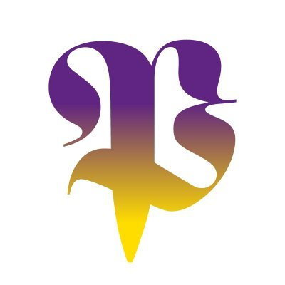

Phoenix Court WorksA wellbeing signposter for the neighbourhood, built across one workshop session using Granola, ChatGPT and Claude.
The brief was to use AI to make something genuinely useful for this neighbourhood. The breakout surfaced three pains — surplus food logistics, digital exclusion, and a fragmented mental health signposting landscape with six-week waits. We picked the wellbeing one and built it. Below is everything the workshop produced, in roughly the order it was made.
The session was a mix of community organisations, a venture studio, a VC, and an artistic director. Below is the conversation grouped into the patterns that actually shaped what got built — not in chronological order, but in roughly the order the ideas earned their place.
A local food pantry operates one day a week. Anything unsold and not lasting until the next week gets broadcast through WhatsApp — the call goes out for whoever can grab leftover potatoes or carrots. The bottleneck isn't goodwill, it's logistics: matching food to drivers, in time, at scale.
Most council and benefits services have moved online, which filters out elderly residents and people who don't speak English fluently. The Afghan community was named specifically. Across one organisation, staff collectively speak 23 languages — but resources are stretched, and you can't have everyone on shift at once. Translators and family advocates are in short supply.
The waiting list for 1-to-1 mental health support runs at six weeks. One organisation has two part-time staff doing visits and demand is rising. Walk-in services and workshops exist; signposting between organisations does happen — but it depends on individual workers happening to know who's offering what this week.
"The waiting lists are quite high. We have a walk-in service and workshops, but getting that one-to-one or even signposting working is hard."
Early ideas leaned toward a Camden-wide marketplace: residents and orgs both posting needs and offers, gamified contributions, badges for hours volunteered. But the room kept catching itself. "Once it's, okay, let's build this platform — I already don't want to join it because it's another thing that will spend a lot of information at me."
Open consumer platforms also raise real safeguarding concerns for residents who are already isolated and vulnerable. Someone offering to come round and cook isn't the same thing as a vetted volunteer. Whoever builds this has to take that seriously.
A counter-current ran through the discussion: instead of chasing speed, what if AI helped Camden slow down? Reframe a food delivery as a slow walk. Reframe a lonely meal as company. Use AI in the background to surface these moments through interfaces residents already use — WhatsApp, voice — rather than adding another app to learn.
"The interface should be agnostic and AI should be in the background. If they know how to use WhatsApp, surface it through WhatsApp."
The clearest moment in the breakout: someone naming that you can't have an AI football coach, you can't have an AI sit with someone. The human services have to stay human. But AI can absolutely take the translation, the form-filling, the calendar lookups, the directory-trawling off the humans doing the parts only humans can do.
"What we're trying to create here is connecting people. The services will remain — you cannot get AI to move food or give psychological services. But we can get AI to help knowing that there is a therapist who's taken a sabbatical and has some time."
Each link below has a one-line "what it is" and, where useful, a slightly longer aside about why it might be the most interesting bit. Skim the asides if you only have a minute — they're where I've put the honest reflection.
The one-page prompt the workshop opened with. Useful as the starting point if you want to run the same exercise with your own group.
Pantry Relay, 23 Languages, and One Front Door — one solution per pain. We built the third because it had the broadest reach across all three, but the other two are still on the table.
The final write-up of One Front Door, designed to land equally well with a frontline worker, a funder, and a tech founder. Pain on the left, solution on the right, what the AI does and doesn't do underneath.
Probably the most reusable thing in this folder. The structure — pain / solution / role of AI / role of humans / what we'd need to test — is generic. Swap the content and you have a brief for any AI-assisted community service.
The exact prompt used to generate the mockup. The closest thing to a shareable transcript of how the build was steered — what was specified, what was deliberately excluded, what tone the AI was asked to hold.
Probably the most interesting artefact if you want to replicate this approach with your own org. Most of the work in getting useful output from Claude is in the prompt, not the chat that follows. This one was first-attempt good because it was specific about visual conventions, scripted the conversation tightly, and named what NOT to produce.
The workshop framing assigned a role to each tool — Granola to capture, ChatGPT to build, Claude to refine. In practice the lines blurred, but the division of labour held up well.
Granola recorded the breakout and produced a transcript clean enough that the three pains could be pulled directly from it without re-listening. It didn't replace note-taking; it removed the friction that usually means notes never get written up. Worth a caveat: Granola's a great tool, but it struggles in larger group conversations where people talk over each other — which we did. Useful for the shape of the discussion, less reliable for exact attribution.
Claude did most of the synthesis and production work — drafting the three-solutions document, writing the one-page brief, generating the WhatsApp mockup as working HTML, and packaging this site. The pattern that worked was: feed it the messy human input, ask for a specific output, push back when it produced something generic.
The clearest principle to come out of the breakout — and the one the final solution leans on hardest — is that AI's job here is admin and matching, not delivery. You can't have an AI football coach. You can't have an AI sit with someone struggling. But you can have an AI take the translation, the form-filling, the calendar lookups, the directory-trawling off the humans who do the parts only humans can do.
A single conversational entry point — over WhatsApp, voice note, or text — in any language. The AI asks two or three clarifying questions and matches the resident to a specific slot available this week. It books it if the org has shared its calendar; otherwise it gives the right phone number and what to ask for. No new app to learn.
If the mockup isn't loading, open it in a new tab.